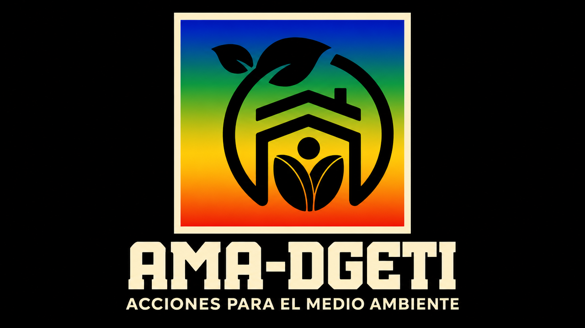

| Inicio | Energía | Tierra | Reciclaje | Medio Ambiente | ALUMNO |
|
 Programa AMA-DGETI Reseña y Finalidad del Programa AMA-DGETI (Acciones por el Medio Ambiente de la DGETI) es una iniciativa creada por la Dirección General de Educación Tecnológica Industrial y de Servicios. Su meta principal es cultivar una profunda conciencia ecológica y estimular prácticas sustentables que involucren a estudiantes, maestros y familias, extendiendo este impacto más allá del entorno escolar. El programa está diseñado para forjar individuos responsables y comprometidos con la naturaleza. Se logra integrando la educación ecológica en la cotidianidad académica a través de dinámicas como la separación de residuos, la plantación de árboles, la conservación de recursos hídricos y la promoción de la ciencia ambiental. Implementación en el Subsistema DGETI Desde inicios de 2021, esta iniciativa se ha integrado de forma activa en la red de planteles de la DGETI. Opera como un eje transversal dentro de las actividades de los CBTis y CETis a nivel nacional, fortaleciendo el desarrollo ético de los alumnos de cara a la actual crisis climática y ambiental.
|